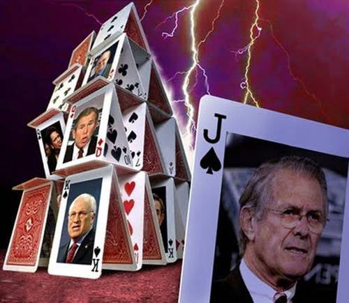
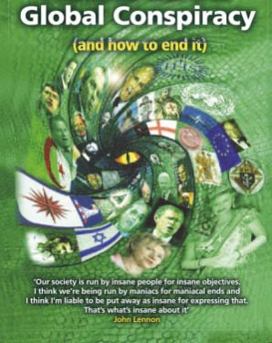
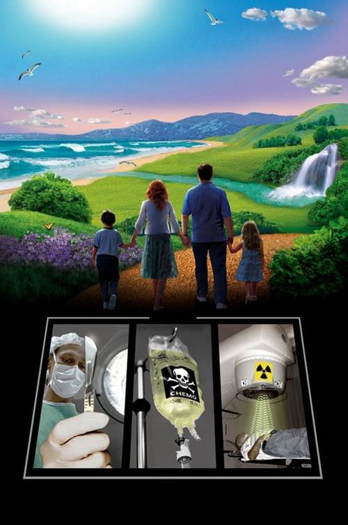
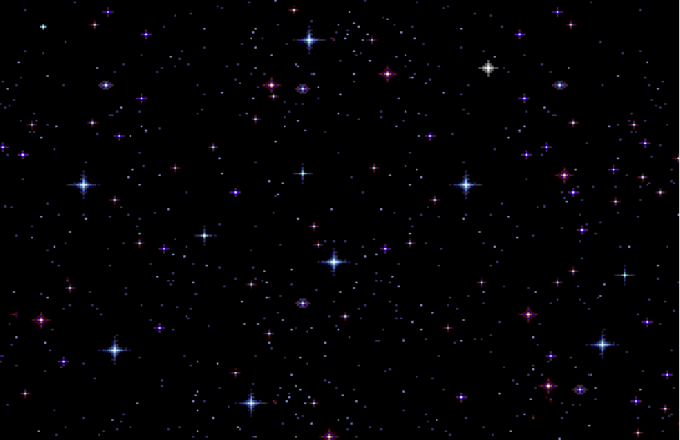

Preporuka za ovaj jedinstveni uređaj za zaštitu od tehničkih i drugih zračenja.
(Uređaj preporučuje i Spasoje Vlajić)

Stranica treće oko je više namenjena onima koji već nešto znaju o ovim temama!
Sve što vam se dešava u životu nije slučajno i ima bar 10 negativnih strana i 10 pozitivnih. Znači ništa nije crno-belo kao što često pokušavaju sa razlogom da vam prikažu.Evo na primer da uzmemo ovaj svinjski grip(ili bilo koju buduću bolest) da vidimo šta se dešava:
Negativne strane za ljude:
-Demoni se hrane strahom i negativnim emocijama -Kradu vam čitavu mrežu informacija za evoluciju i kristalizaciju forme
-Šire nemir među ljudima na kolektivno nesvesnom što koči proces evolucije
-Finansijska korist
-Skretanuje pažnje stanovništva sa njihovih ostalih vrlo krupnih manipulacija koje su u toku.
-Skretanje pažnje ljudi na brige iz spoljnog sveta umesto bavljenje sobom
-Štetnost vakcina i čipovanje ljudi što sprečava dalju evoluciju čovečanstva koja je inače u toku
-Pad u vibraciji i svesnosti ljudi što isto onemogućava dimenzionalni prelaz
-Razlomljavanje dnk i kočenje evolucije
-Pokušaj stvaranja globalnog genocida i formiranje “zlatne milijarde”,i još mnogo toga…
Pozitivne strane za ljude:
-Otplaćivanje ljudske karme
-Opredeljuje neke ljude na putu evolucije da se više izoluju i više bave sobom
-Smrtnost od ove bolesti i onih narednih se može očekivati samo kod onih osoba koje nisu razvile do sada dovoljno imunološki sistem i kristalizaciju forme,koje ne mogu dalje da evoluiraju u ovom životu jer imaju evolutivnu blokadu i ograničenja po tom pitanju.
-Teške situacije teraju ljude da se pokrenu i probude.
-Provera intuicije pri čemu mogu da pogreše samo oni koji je praktično i nemaju,i ubeđeni su u iluziju da je stvarna,što će dovesti do eliminacije negativnih osoba sa sporim ili nedovoljnim napretkom.
-Podstiče ljude da razmišljaju da je sve ovo možda neki ružan san i da bi bilo jako lepo kada ne bi nikada bilo bolesti što će kada se formira ovakva misao na globalnom planu upravo i dovesti do toga u budućnosti odnosno u novom svetu sa tim našim željama(jer taj svet se formira na osnovu naših želja).
-Razotkrivanje ko je na vrhu piramide i početak kraja vladavine demona(ko drugome jamu kopa sam u nju pada).
-Zbog globalnog razotkrivanja njihovih zavera početak urušavanja svog dosadašnjeg znanja odnosno “nauka” i uskoro kraj vremena kakvog poznajemo(jer s obzirom na razotkrivenu zaveru vakcine protiv ove gripe postaviće se pitanje i ostalih vakcina,a onda i lekova,a onda i štetnosti tehnike koja je inače sve štetnija,pa hrane,gradnje i svega ostalog.Tačnije sada se već vide obrisi daljnih dešavanja i toga da će se njihov svet urušiti kao kula od karata u narednom periodu).

Iz svega ovoga će proizići potpuno bankrotstvo Negativnih vladara sveta i smrt u fizičkoj formi i uklanjanje njihovih inspiratora sa nefizičke ravni(koje je inače naveliko u toku i vrlo je uspešno) za dugo,dugo vremena.S obzirom da su prekršili odnosno na vrlo lukav način manipulisali zakonima kosmosa već milionima godina ovoga puta je i sam Bog odlučio da se umeša u sve ovo jer je pretila opasnost da stvari potpuno izmaknu kontroli,i biće u potpunosti sklonjeni iz okruženja planete.
Što se tiče onih tzv.pozitivnih vanzemaljaca i njima će ovoga puta biti vraćena sva karma koju su natovarili ljudima na zemlji da je odrađuju umesto njih tako da mogu da očekuju izvesne probleme i distorzije koje će morati sami da isprave a ne na račun drugih da evoluiraju.
Kada se rešimo jednom ovih repatih i rogatih,to će biti odrađen velik deo posla međutim to nije kraj priče.Svako već sada mora da raščisti sa sobom i svim svojim osobinama,i posebno je opasno ako se krećete po ekstremnim polaritetima ako već nije i kasno.Morate hvatati srednji put i integrisati paralelne živote i sve dovesti na srednji put.Ako se krećete po ekstremnim polaritetima nećete uspeti.Morate eliminisati svu negativnu karmu i to ličnu prvenstveno, a bitna je i državna i zemaljska.Zemaljska se odrađuje preko ovih svetkih finansijkih kriza,pandemija i ostaloga što će biti tako da smo ukupno gledano na dobrom putu i ima dosta govora o tome da ćemo baš mi biti glavni u pokretanju nove matrice,novog boljeg sveta,a s obzirom da nas Iluminati u svojim krugovima proglasiše za nebeski narod ovo je vrlo moguće,zapravo ja znam da je tako jer imam i neke druge vrlo pouzdane informacije o ovome.Tačnije Srbija će biti centar novog boljeg sveta.Nadam se da vam je jasno zašto su se toliko nakačili na nas ovi negativci.

Inače svi koji su pomagali formiranje negativnog nakaradnog novog svetskog poretka bilo na ličnom ili državnom nivou i učlanjivali se u njihove razne organizacije će praktično nestati zajedno sa njima.Ovoga puta Bog kaže da neće biti kompromisa,svako će dobiti svoje,jer u pitanju je i svemirski ciklus i sve mora da dođe na svoje mesto.Sve“poznate i slavne”ličnosti više neće postojati takođe.Sve i da su savršeni, preveliko je umrežavanje energije sa drugim ljudima pa tako oni nestaju sa scene,a i inače su na vrlo niskom evolutivnom nivou.Ovo je i sasvim logično jer nije moguće biti slavan u svetu demona a onda ići u raj.Posebno što da bi postali poznati i slavni mora da sklope pakt sa đavalom inače ništa od svega.
Vidim mnogi se muče i oko toga i pitaju sebe “što sam ja ulagao onda energiju u nešto uzaludno" ili brkaju neke stvari oko svesnoti i informisanosti,logike. Energija koja se ulaže u nešto se ne može izgubiti a isto i nivo svesti do koga se stigne(bar u većini slučajeva).Čak i oni koji ne uspeju sada do kraja u nekim stvarima to im ostaje da nastave tamo gde su stali u nekom drugom životu.Problem je samo što se većina vrti u krug,ulažući energiju u pogrešne stvari i onda im se to vraća ali u negativnom,a dovodi i još do pada u svesnosti.Tu je glavni problem što većina i ne zna koja su to pravila kosmosa ili boga po kojima treba živeti jer ova zemaljska su uglavnom lažna,a čak iako bi znali većina se opet ne bi pridržavala toga(to je stvar svesnosti).Drugi su opet nešto čuli o svemu ali često brkaju informisanost i svesnost ili logiku i svesnost što nema veze jedno s drugim ali ako se dobro upotrebi može da koristi,a opet ako se loše upotrebi(što je opet u većini) može da šteti.Međutim ona pozitivna kritična masa je već stvorena i za formiranje novog sveta uzimaju se mišljenja samo onih koji su dovoljno svesni i idu siguno dalje(ima ko zna ko su ti),jer inače zamislite kakav bi to bio raj da se svi pitaju,ne bi ga ni bilo.
Dosta se raspravlja i o tome da pojedini ljudi misle kako treba pokrenuti kundalini što pre pa će se prosvetliti odmah,ali ovo vam ne bi nikako savetovao da radite jer možete i da se ubijete sa tim,pogotovo ako ne možete da ga zaustavite.Samo to nemojte raditi ,jer može biti opasno,to vam je kao ruski rulet.Kundalini je programiran da se aktivira kada dovoljno sazrite za to i to samo koliko je potrebno.Tako da postupak je obrnut,prvo dođete na određeni nivo svesti, pa se on aktivira i podrži dalji razvoj,i tako se stalno ponavlja proces do određenog nivoa.Znači on se onoliko često aktivira koliko ste vi spremni da izdržite to jer nije baš prijatno u tom momentu.
Mnogi se pitaju da li će biti prirodnih katastrofa i u kojoj meri.Katastrofa će biti više u onoj meri u kojoj budete manje hteli da se menjate čak i do zaustavljanja zemaljske kugle na neko vreme pri čemu će mnogi poludeti i neće preživeti,jer kosmos i sam bog je odlučio da zemlja i ljudi moraju da evoluiraju jer je sazrelo vreme za to.Ko ne bude hteo ili neće da se prilagodi promenama nestaće jer remeti božanski plan harmonije koja treba da se rodi.Tako da je moj savet da što više širite informacije o svemu što se dešava(samo nije dobro nikoga ubeđivati), da bi prvo srušili svetsku vladu vladavine ovih zombija da ih tako nazovem.Treba što više razotkrivati sve njihove planove i fokusirati se na to da im to neće uspeti(što više ljudi to bolje).Fokusiranje se radi u mislima(budite sigurni da će biti tako).Rećiću vam i to da ne postoji samo negativna svetska vlada,postoji i pozitivna koja sarađuje isto na globalnom nivou i bori se za oslobađanje sveta od negativnih sila koje su okupirale zemlju.Zapravo čitava istorija čovečanstva i svi događaji su vezani za borbu dobra i zla.Došlo je vreme da otkijemo i koja je to Najveća Tajna Sveta.Mnogi u ovo neće verovati,neki naslućuju,neki će reći znao sam,izbor je na vama kao i obično ali vremenom ćete se uveriti u ovo što ću reći,a ko bude detaljno ovo istraživao doći će do istog zaključka.Najveća Tajna i ono što je zabranjeno u javnosti bilo gde pričati je u vezi borbe dobra i zla na zemaljskom nivou(ali ne one zvanične dogmatske crkvene verzije).Čuli ste sigurno i čitali bezbroj puta priču "Srbi su nebeski narod",i to je prva istina.Znači mi smo jedini na zemlji koji smo napravljeni na drugoj planeti vrlo naprednoj i tako doneseni na zemlju,sa kodom ili šifrom koju ovi negativci ne mogu da dešifruju(i onda zombiraju kao ove njihove) i na zemlji smo da bi bili kontrolori planete u pozitivnom smislu o čemu sam već pričao.Jako dugačka bi bila cela ova priča kroz istoriju pa ću skratiti.Kao što postojimo mi kao pozitivni kontrolori planete sa svojom trenutnom vojnom zaleđinom koja je na istoku(prvenstveno Rusija,koja jako dobro zna sve ovo i njihovim pomoćnicima),sa druge strane medalje postoji Vatikan(trenutno,a pre njega su se drugačije samo zvali),kao negativni kontrolor planete,sa svojom zaleđinom na zapadu(trenutno NATO).Borba dobra i zla se na zemaljskoj ravni vodi na relaciji Srbija-Vatikan i od ishoda te bitke će zavisiti čitava budućnost čovečanstva.Ova bitka nije uvek tako crno bela kao što zamišljate,na obe strane postoje infiltrirane grupe koje bi se mogle nazvati špijunima,krticama,koji zapravo rade za suprotnu stranu,a kada tu dodate još umešanost vanzemaljaca sve se mnogo komplikuje.Ali tako je to,ne može svako biti to što smo mi,to je samo za zemaljsku duhovnu elitu.Znam težak je to posao i zato stalno imamo ove što odlaze u inostranstvo,od kojih se inače traži odmah da se odreknu i svog imena i porekla ali čak da vam to i ne traže posle 10 godina boravka u inostranstvu vi gubite ono što ste bili i postajete njihovi pa čak i fizički.Ima i dobra strana,iako ste izgubili dobar deo svoje esencije,razblažujete i njihovu negativnost(na kolektivno nesvesnom da tako kažem) i tako menjate svet na bolje.Isto važi i za države,primer EU,zamislite koja bi tragedija bila da mi uđemo u to.Oni nas neće jer znaju da im kvarimo esenciju zla,a mi nećemo jer je to samoubistvo najverovatnije,osim ako bi uspeli da dominiramo energetski nad njima i promenimo je u pozitivno za šta se neki kod nas zalažu,ali nisam siguran de je ovo dobra ideja.Mislim da treba da se okrenemo istoku.Rusija je prva zemlja koja se oslobodila globalista nekih 60% ,to je do sada najveći procenat jedne zemlje.Tako da treba da idemo u evroazijsku uniju ako je moguće jer ona neće biti pod kontrolom velikog brata ili u zanemarljivoj meri.Na zapadu je inače prava noćna mora spominjati evroazijsku uniju,a ne vole ni naziv Rusija(pa se nekada to zvalo sssr,kao ni Srbija pa smo se zvali Jugoslavija).Kažu ovi sa zapada da i samo izgovaranje tih reči izaziva kolektivno sećanje i buđenje svesti.Sećate se da je ona Olbrajtova tražila da kada se odvojila Crna Gora da mi i dalje zadržimo naziv Jugoslavija(čak je i rekla prave razloge).Opasan demon onaj babac,šta kažete slika i prilika.U poslednje vreme od 2014.godine počinju ovi sa zapada da traže kao i jedan od uslova da uđemo u EU je da nam menjaju svest(zapravo dolazimo do suštine).Srećom to neće nikada uspeti jer to pokušavaju već vekovima.Nemaju takvo oružje,a uostalom postoji i druga strana koja to neće dopustiti nikada(mislim ovoga puta na one sa višeg nivoa postojanja koje ne vidimo).
Drugo bitna stvar je da se fokusirate na to kakav bi ste svet želeli u budućnosti,odnosno viziju budućnosti(ovo je posebno bitno za osobe koje jako interesuje ova tema),predlažem sledeće:Svet u kome će sve biti besplatno i dostupno svakom(neće postojati novac),neće postojati privatna svojina(sve će biti zajedničko),funkcionisaće telepatija što vodi u povezivanje svih ljudi i nestanak kriminala i svih manipulacija,savršena harmonija među ljudima,životinjama i biljkama i sa prirodom, upotreba isključivo prirodne biljne hrane bez pesticida sa dovoljno svih potrebnih hranljivih materija i puno životne energije,dug život bez bolesti(bar 1000 godina za početak),život isključivo u skladu sa kosmičkim zakonima,razvoj jedne nove sveobuhvatne nauke kojom će se svi baviti i koja će pomagati ljudima u svakom pogledu ali potpuno bez štetnih posledica po ljude ili okolinu.Roboti i mašine će raditi sve neophodne poslove.Samo sam neke stvari nabrojao mada je lista dugačka ali za početak se fokusirajte na ovo ako se slažete ili bar razmišljajte na tu temu.Nemojte se posebno sada opterećivati kako je sve to moguće.Sve što sam nabrojao će se ostvariti ali mi možemo da ubrzamo stvari a time se povinujemo i božanskom proviđenju za planetu Zemlju i time smanjimo i prirodne i druge katastrofe koliko je moguće.Ovo sve pišem jer imam informaciju da je na zemlji glavni problem ljudi taj što ne žele da se menjaju nego čekaju određene datume i Mesiju otprilike da ih spase.To je rezultat hiljadugodišnjeg programiranja ljudi i ako bi se tako nastavilo ne bi bilo baš lepo u periodu tranzicije.Morate preduzimati konkretne stvari.
1.Prvo treba da znate šta treba raditi
2.Preduzimati stvari u praksi kako sa sobom tako i sa ovim ludim svetom da bi smo ga promenuli što pre
3.Širiti što više informacije o planovima “zombija” koji vladaju svetom da bi bili što više provaljeni i polako da idu u penziju ili tamo gde im je već mesto.
Što se tiče ovoga rada na sebi to ima sve detaljno objašnjeno u knjigama i nije moguće ovako na sajtu objašnjavati detaljno jer je preopširno a i nije za svakoga,to morate uzeti i dobro proučiti ukoliko ste zainteresovani u tom pravcu.Ima o svemu što je potrebno od zaštite informacija,kosmičkih zakona pa do potpune kristalizacije forme na ćelijskom nivou.


Ovde možete napraviti manju ili veću kupovinu onoga što je na stranici knjige ,kontakt i porudžbine objašnjeno.Znači moguće su 2 vrste porudžbine :
1.Manja kupovina se tretira više kao donacija ali za uzvrat ipak dobijate jednu vrlo zanimljivu knjigu u pdf-u o Nikoli Tesli koja će vas oduševiti,spada u raritete i malo se zna o ovome.Vrlo poučna stvar.
2.Veća kupovina podrazumeva kompletan detaljan materijal o ovim temema sa sajta koji je objašnjen na stranici knjige ,kontakt i porudžbine i ima oko 50gb i nakon poručivanja možete preuzeti preko linka ili za one u Srbiji može i pouzećem.Za one koji plaćaju preko linka ispod, izaberite opciju 60 evra.To se podrazumeva da je ova porudžbina.Oni koji hoće pouzećem neka me kontaktiraju.
Prilikom procedure kupovine uloliko ste za manju kupovinu ili donaciju možete izabrati jedan od već ponuđenih iznosa ili jednostavno u polje gde piše iznos vi upišite svoj iznos po želji,a za veću porudžbinu kao što rekoh birate 60 evra opciju.Nakon završenog plaćanja bićete kontaktirani preko emaila u roku 24 časa i dobićete ili link za preuzimanje ako je veća porudžbina ili knjigu na email ako je manja.
Preporuka za ovaj jedinstveni uređaj za zaštitu od tehničkih i drugih zračenja.
(Uređaj preporučuje i Spasoje Vlajić)

Mobirise.com